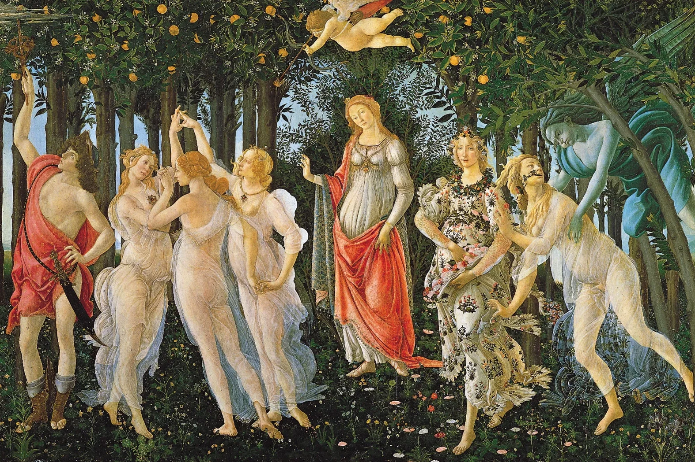

Saponi Artistici · 01 / 07
Botticelli
Il volto della Primavera, scolpito nel sapone.
Un omaggio al Rinascimento fiorentino: l'eleganza di un capolavoro portata sulla pelle, in un bassorilievo bianco da custodire come un piccolo quadro.
Il volto della Primavera, scolpito nel sapone.
Un omaggio al Rinascimento fiorentino: l'eleganza di un capolavoro portata sulla pelle, in un bassorilievo bianco da custodire come un piccolo quadro.
La Primavera di Sandro Botticelli, custodita agli Uffizi di Firenze, è tra i dipinti più amati della storia dell'arte occidentale. Tra i rami di un boschetto di aranci, Venere accoglie il corteo di Flora, delle Grazie e di Zefiro: un'allegoria della bellezza dipinta alla corte di Lorenzo il Magnifico.
Il sapone Botticelli isola il volto della dea, incorniciato di fiori, in un bassorilievo bianco: un piccolo omaggio a un capolavoro che racconta la grazia da oltre cinquecento anni.

Profumatissimo, come tutta la collezione. Un profumo intenso e avvolgente che continua a vivere nel cassetto, sulla biancheria, nella stanza, molto dopo l'ultimo gesto.
Ogni bassorilievo della collezione nasce da un calco: una lastra scolpita a mano, dettaglio dopo dettaglio, da uno scultore. È da quello stampo, il vero gesto artigianale della collezione, che prende forma ogni sapone, con la stessa fedeltà al disegno originale.
Non è una semplice decorazione: è un piccolo omaggio all'arte italiana, pensato per essere usato con lentezza o, semplicemente, esposto come si terrebbe una stampa d'autore.
Si regala un sapone, si dona un'emozione.
Profuma una casa, accoglie chi entra, custodisce un ricordo: un regalo che resta molto dopo il momento in cui è stato donato.
Scrivici